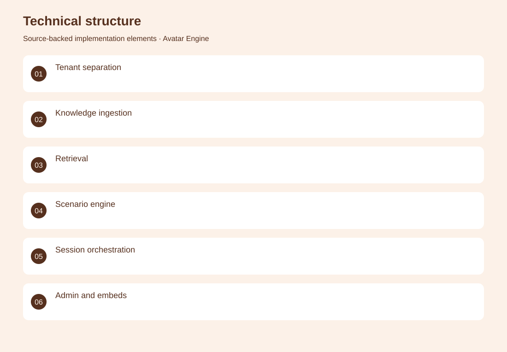
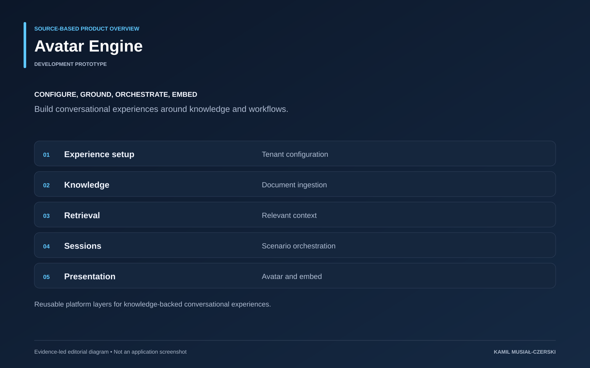

The project
Tenant configuration defines each experience, while separate services handle document ingestion, retrieval and session execution. The administration interface exposes scenario and knowledge configuration, and embedded experiences deliver the conversational interface. The result is a reusable development platform rather than a collection of isolated avatar demos.
The problem
Organizations need repeatable ways to configure knowledge-backed conversational interfaces.
The solution
The platform separates tenant configuration, retrieval, session orchestration and presentation.
My contribution
Connected tenant configuration, knowledge ingestion, scenario execution and embeddable avatar experiences.
AI capabilities
Retrieval-augmented generation; Conversational avatars; Scenario orchestration
Technical structure

Product overview

The portfolio cover is an editorial illustration. No live product screenshot is presented for this project.
Showcase assets
{kind=link}
{kind=link}
{kind=link}
New portfolio identity. Newly designed marks are portfolio treatments, not claims of official client branding.